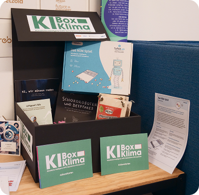
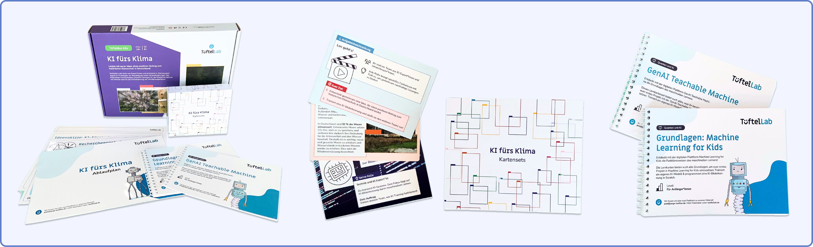
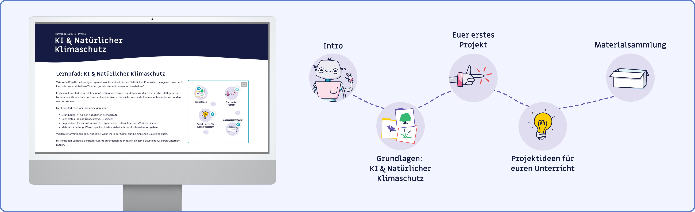
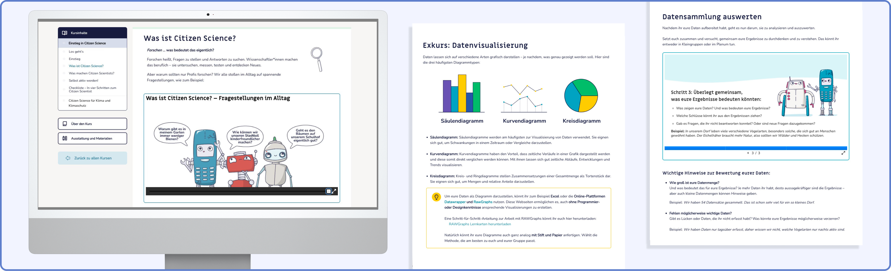

KI-Box Klima
Herausforderung
Künstliche Intelligenz und Klimaschutz gehören zu den prägendsten Zukunftsthemen unserer Zeit. In Bildungseinrichtungen kommen beide bisher aber kaum praxisnah zusammen an. Pädagogischen Fachkräften fehlte ein niedrigschwelliger, handlungsorientierter Zugang, um Jugendlichen ab 14 Jahren zu vermitteln, wie KI nicht nur Risiken birgt, sondern aktiv für den Schutz von Klima und Natur eingesetzt werden kann.
Die KI-Box Klima
Die KI-Box Klima ist eine pädagogische Materialbox, die Künstliche Intelligenz und Natürlichen Klimaschutz praxisnah verbindet und zeigt, wie KI gemeinwohlorientiert für den Schutz von Wäldern, Mooren und anderen Ökosystemen eingesetzt werden kann. Ergänzend zur physischen Box werden thematisch passende Online-Kurse und monatliche Online-Fragerunden zur Vertiefung angeboten. Alle Inhalte werden als OER (Open Educational Resources) zur Verfügung gestellt.

Inhalte der KI-Box Klima
Die Ki-Box Klima setzt sich aus einer Vielzahl von bereits bestehenden und neu entwickelten Lehr- und Lerninhalten zusammen. Im Rahmen der Projektlaufzeit habe ich vielfältige Unterrichtskonzepte entwickelt, unter anderem:

→ Digitaler Lernpfad: KI und Natürlicher Klimaschutz

→ Grundlagenkurs: Citizen Science?
→ Unterrichtskonzept: Citizen Science in eurer Schule

Meine Rolle
Ich war maßgeblich an der Konzeption, didaktischen Ausarbeitung und Umsetzung der KI-Box Klima beteiligt:
- Fachliche Recherche und Abstimmung mit Expert*innen aus den Bereichen KI und Natürlicher Klimaschutz
- Entwicklung und didaktische Ausarbeitung von Unterrichtskonzepten und Lernmaterialien
- Konzeption und Erstellung von interaktiven Onlinekursen
- Design und Layout von Lernmaterialien (Digital & Druckausgabe)
- Unterstützung von Teilnehmenden bei inhaltlichen Fragen und technischen Unsicherheiten
KI-Box Klima ist während meiner Zeit bei der Junge Tüftler gGmbH in Zusammenarbeit mit kosmos b e.V. entstanden. Das Programm wurde von 2024 bis 2026 im Auftrag des Bundesministeriums für Umwelt, Naturschutz, nukleare Sicherheit und Verbraucherschutz im Rahmen des Aktionsprogramms Natürlicher Klimaschutz umgesetzt.